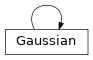
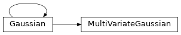
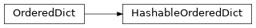

jpt.learning.distributions¶
© Copyright 2021, Mareike Picklum, Daniel Nyga.
Module Contents¶
- class jpt.learning.distributions.Gaussian(mean=None, cov=None, data=None, weights=None)¶
- 
Extension of
dnutils.stats.GaussianCreates a new Gaussian distribution.
- Parameters:
mean (float if multivariate else [float] if multivariate) – the mean of the Gaussian
cov (float if multivariate else [[float]] if multivariate) – the covariance of the Gaussian
data ([[float]]) – if
meanandcovare not provided,datamay be a data set (matrix) from which the parameters of the distribution are estimated.weights ([float]) – [optional] weights for the data points. The weight do not need to be normalized.
- deviation(self, x)¶
Computes the deviation of
xin multiples of the standard deviation.- Parameters:
x –
- Returns:
- sample(self, n)¶
Return n samples from the distribution subject to the parameters. .. warning:
This method requires the ``numpy`` package installed.
- linreg(self)¶
Compute a 4-tuple
<m, b, rss, noise>of a linear regression represented by this Gaussian.- Returns:
m- the slope of the lineb- the intercept of the linerss- the residual sum-of-squares errornoise- the square of the sample correlation coefficientr^2
- update_all(self, data, weights=None)¶
Update the distribution with new data points given in
data.
- estimate(self, data, weights=None)¶
Estimate the distribution parameters with subject to the given data points.
- update(self, x, w=1)¶
update the Gaussian distribution with a new data point
xand weightw.
- retract(self, x, w=1)¶
Retract the a data point x with eight w from the Gaussian distribution.
In case the data points are being kept in the distribution, it must actually exist and have the right weight associated. Otherwise, a ValueError will be raised.
- kldiv(self, g2)¶
Compute the KL-divergence of two multivariate Gaussian distributions.
- Parameters:
g1 – instance of
dnutils.Gaussiang2 – instance of
dnutils.Gaussian
- Returns:
- class jpt.learning.distributions.MultiVariateGaussian(mean=None, cov=None, data=None, ignore=- 6000000)¶
- 
Extension of
dnutils.stats.GaussianA Multivariate Gaussian distribution that can be incrementally updated with new samples
- cdf(self, intervals)¶
Computes the CDF for a multivariate normal distribution.
- Parameters:
intervals (list of matcalo.utils.utils.Interval) – the boundaries of the integral
- property mvg(self)¶
Computes the multivariate Gaussian distribution.
- property dim(self)¶
Returns the dimension of the distribution.
- property cov_(self)¶
Returns the covariance matrix for prettyprinting (precision .2).
- property mean_(self)¶
Returns the mean vector for prettyprinting (precision .2).
- conditional(self, evidence)¶
Returns a distribution conditioning on the variables in
evidencefollowing the calculations described in Conditional distributions, i.e., after determining the partitions of \(\mu\), i.e. \(\mu_{1}\) and \(\mu_{2}\) as well as the partitions of \(\Sigma\), i.e. \(\Sigma_{11}, \Sigma_{12}, \Sigma_{21} \text{ and } \Sigma_{22}\), we calculate the multivariate normal \(N(\overline\mu,\overline\Sigma)\) using(1)¶\[\overline\mu = \mu_{1} + \Sigma_{12}\Sigma_{22}^{-1}(a-\mu_{2})\](2)¶\[\overline\Sigma = \Sigma_{11} + \Sigma_{12}\Sigma_{22}^{-1}\Sigma_{21}\]- Parameters:
evidence (dict) – the variables the returned distribution conditions on (mapping indices to values or Intervals of values)
- plot(self)¶
import sys self.dim==1
- deviation(self, x)¶
Computes the deviation of
xin multiples of the standard deviation.- Parameters:
x –
- Returns:
- sample(self, n)¶
Return n samples from the distribution subject to the parameters. .. warning:
This method requires the ``numpy`` package installed.
- linreg(self)¶
Compute a 4-tuple
<m, b, rss, noise>of a linear regression represented by this Gaussian.- Returns:
m- the slope of the lineb- the intercept of the linerss- the residual sum-of-squares errornoise- the square of the sample correlation coefficientr^2
- update_all(self, data, weights=None)¶
Update the distribution with new data points given in
data.
- estimate(self, data, weights=None)¶
Estimate the distribution parameters with subject to the given data points.
- update(self, x, w=1)¶
update the Gaussian distribution with a new data point
xand weightw.
- retract(self, x, w=1)¶
Retract the a data point x with eight w from the Gaussian distribution.
In case the data points are being kept in the distribution, it must actually exist and have the right weight associated. Otherwise, a ValueError will be raised.
- kldiv(self, g2)¶
Compute the KL-divergence of two multivariate Gaussian distributions.
- Parameters:
g1 – instance of
dnutils.Gaussiang2 – instance of
dnutils.Gaussian
- Returns:
- class jpt.learning.distributions.Distribution¶
Abstract supertype of all domains and distributions
- abstract plot(self, title=None, fname=None, directory='/tmp', pdf=False, view=False, **kwargs)¶
Generates a plot of the distribution.
- Parameters:
title (str) – the name of the variable this distribution represents
fname (str) – the name of the file
directory (str) – the directory to store the generated plot files
pdf (bool) – whether to store files as PDF. If false, a png is generated by default
view (bool) – whether to display generated plots, default False (only stores files)
- Returns:
None
- class jpt.learning.distributions.DataScaler(data=None)¶
A numeric data transformation that represents data points in form of a translation by their mean and a scaling by their variance. After the transformation, the transformed input data have zero mean and unit variance.
- class jpt.learning.distributions.Identity¶
Simple identity mapping that mimics the __getitem__ protocol of dicts.
- class jpt.learning.distributions.Numeric(quantile=None)¶
-
Wrapper class for numeric domains and distributions.
- plot(self, title=None, fname=None, xlabel='value', directory='/tmp', pdf=False, view=False, **kwargs)¶
Generates a plot of the piecewise linear function representing the variable’s cumulative distribution function
- Parameters:
title (str) – the name of the variable this distribution represents
fname (str) – the name of the file to be stored
xlabel (str) – the label of the x-axis
directory (str) – the directory to store the generated plot files
pdf (bool) – whether to store files as PDF. If false, a png is generated by default
view (bool) – whether to display generated plots, default False (only stores files)
- Returns:
None
- class jpt.learning.distributions.ScaledNumeric(quantile=None)¶
-
Scaled numeric distribution represented by mean and variance.
- plot(self, title=None, fname=None, xlabel='value', directory='/tmp', pdf=False, view=False, **kwargs)¶
Generates a plot of the piecewise linear function representing the variable’s cumulative distribution function
- Parameters:
title (str) – the name of the variable this distribution represents
fname (str) – the name of the file to be stored
xlabel (str) – the label of the x-axis
directory (str) – the directory to store the generated plot files
pdf (bool) – whether to store files as PDF. If false, a png is generated by default
view (bool) – whether to display generated plots, default False (only stores files)
- Returns:
None
- class jpt.learning.distributions.HashableOrderedDict(*args, **kwargs)¶
- 
Ordered dict that can be hashed.
Initialize self. See help(type(self)) for accurate signature.
- clear()¶
D.clear() -> None. Remove all items from D.
- copy()¶
D.copy() -> a shallow copy of D
- get()¶
Return the value for key if key is in the dictionary, else default.
- items()¶
D.items() -> a set-like object providing a view on D’s items
- keys()¶
D.keys() -> a set-like object providing a view on D’s keys
- pop()¶
D.pop(k[,d]) -> v, remove specified key and return the corresponding value. If key is not found, d is returned if given, otherwise KeyError is raised
- popitem()¶
Remove and return a (key, value) pair as a 2-tuple.
Pairs are returned in LIFO (last-in, first-out) order. Raises KeyError if the dict is empty.
- setdefault()¶
Insert key with a value of default if key is not in the dictionary.
Return the value for key if key is in the dictionary, else default.
- update()¶
D.update([E, ]**F) -> None. Update D from dict/iterable E and F. If E is present and has a .keys() method, then does: for k in E: D[k] = E[k] If E is present and lacks a .keys() method, then does: for k, v in E: D[k] = v In either case, this is followed by: for k in F: D[k] = F[k]
- values()¶
D.values() -> an object providing a view on D’s values
- class jpt.learning.distributions.OrderedDictProxy(*args, **kwargs)¶
This is a proxy class that mimics the interface of a regular dict without inheriting from dict.
- class jpt.learning.distributions.Multinomial(params=None)¶
-
Abstract supertype of all symbolic domains and distributions.
- items(self)¶
Return a list of (probability, label) pairs representing this distribution.
- sample(self, n)¶
Returns
nsample values according to their respective probability
- sample_one(self)¶
Returns one sample value according to its probability
- sample_labels(self, n)¶
Returns
nsample labels according to their respective probability
- sample_one_label(self)¶
Returns one sample label according to its probability
- _expectation(self)¶
Returns the value with the highest probability for this variable
- crop(self, incl_values=None, excl_values=None)¶
Compute the posterior of the multinomial distribution.
valuesandexcludeare indices of the values (labels) that are admitted and/or excluded.
- plot(self, title=None, fname=None, directory='/tmp', pdf=False, view=False, horizontal=False, max_values=None)¶
Generates a
horizontal(if set) otherwise vertical bar plot representing the variable’s distribution.- Parameters:
title (str) – the name of the variable this distribution represents
fname (str) – the name of the file to be stored
directory (str) – the directory to store the generated plot files
pdf (bool) – whether to store files as PDF. If false, a png is generated by default
view (bool) – whether to display generated plots, default False (only stores files)
horizontal (bool) – whether to plot the bars horizontally, default is False, i.e. vertical bars
max_values (int) – maximum number of values to plot
- Returns:
None
- class jpt.learning.distributions.Bool(params=None)¶
-
Wrapper class for Boolean domains and distributions.
- items(self)¶
Return a list of (probability, label) pairs representing this distribution.
- sample(self, n)¶
Returns
nsample values according to their respective probability
- sample_one(self)¶
Returns one sample value according to its probability
- sample_labels(self, n)¶
Returns
nsample labels according to their respective probability
- sample_one_label(self)¶
Returns one sample label according to its probability
- _expectation(self)¶
Returns the value with the highest probability for this variable
- crop(self, incl_values=None, excl_values=None)¶
Compute the posterior of the multinomial distribution.
valuesandexcludeare indices of the values (labels) that are admitted and/or excluded.
- plot(self, title=None, fname=None, directory='/tmp', pdf=False, view=False, horizontal=False, max_values=None)¶
Generates a
horizontal(if set) otherwise vertical bar plot representing the variable’s distribution.- Parameters:
title (str) – the name of the variable this distribution represents
fname (str) – the name of the file to be stored
directory (str) – the directory to store the generated plot files
pdf (bool) – whether to store files as PDF. If false, a png is generated by default
view (bool) – whether to display generated plots, default False (only stores files)
horizontal (bool) – whether to plot the bars horizontally, default is False, i.e. vertical bars
max_values (int) – maximum number of values to plot
- Returns:
None